Jets Documentation
Getting Started
Firstly, we would like to thank you for purchasing Jets WordPress theme and chosen it for your website. We outline all kinds of good information, and provide you with all the details you need to use the WordPress theme.
If you are unable to find your answer here in our documentation, feel free to ask for help from our support team, all you have to do is submitting a ticket via our Support Ticket system or email us: help@wpopal.com.
If you like this theme, Please support us by rating us 5 stars (How to rate?)
Download and Installation
The instruction is to help you with installation of the Jets theme.
Download packages
Purchase Jets template from ThemeForest then you can download our template package on there.
Extract package that include all files and folders of theme. When done, you should see jets_theme.zip (zip file name can be changed from version to version).
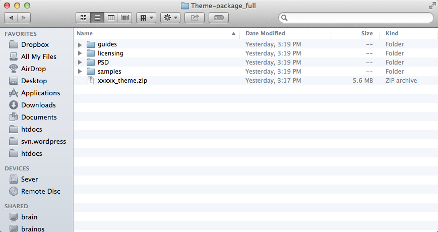
Once the download is complete, unzip the file and you would see the following packages:
- Guides - our detail documentation for the theme
- Theme folder - for manual installation
- Samples - the sample data of the demos, you can import it
- PSD - the PSD files of the theme
- Licensing - the theme license
System Requirements
When selecting a hosting service, you should check to see that these server requirements are provided and installed on their web servers:
- PHP version 5.6 or greater
- MySQL version 5.6 or greater
Theme Installation
There are 2 ways to install a WordPress theme.
Installing Theme From the WordPress Dashboard
Installing a WordPress theme is super easy, you’ll see our video guide:
- Step 1: Navigate to Appearance → Themes in your WordPress admin dashboard.
- Step 2: Click the Add New button at the top of the page and go for the Upload option.
- Step 3: Choose jets_theme.zip then click Install
- Step 4: Wait while the theme is uploaded and installed then activate the theme.
Install theme via FTP
Many users are on shared hosting with low upload limits, and in such situations the Jets theme is often too large to install through WordPress. We suggest you should upload it via FTP.
If you don't know how to use FTP visit this link for information: http://codex.WordPress.org/FTP_Clients . You will need to first uncompress the PACKAGE-theme.zip file you have found in the master zip downloaded from Themeforest. This zip uncompresses into a normal folder. This unzipped folder is all you need to transfer via ftp and if you open it, you will see all sorts of folders and css and php files which together contain all the theme coding.
Using the FTP program transfer this folder which contains the above files to the WordPress installation theme root directory: /wp-content/themes.
Do not upload any of the other files or folders such as licensing or resource or documentation. Uploading any of the other folders may cause problems resulting in the theme not working properly. Learn from WordPress Official Documentation about installing theme with FTP client or with cPanel: http://codex.WordPress.org/Using_Themes
Activate Jets as default theme
After completing the upload, activate the theme as per activating any other theme.
Go to your Dashboard >> Appearance >> Themes >> Activate Jets template
Follow the instruction from the image below:
Known problems when installing the theme
a. The “Broken theme and/or stylesheets missing” error is most common when you install or activate a new theme.
If you get an error saying that the stylesheet is missing, then you have uploaded the wrong folder. Please check that you are uploading the jets_theme.zip within the Theme Files folder. You have to unzip the package file that you download from Themeforest to find this.
b. Problems with uploading via WP admin panel due Upload limit.
You may check your file upload limit on Your Media Uploader page in WordPress. Depending upon the web hosting company and the conditions of the service they provide it may vary. The most common is about 8 MB which is more or less enough. But uploading some media files like audio and video may become a problem with for example 2 MB upload limit.
We decided to share some tips about how to extend your maximum file upload size in WordPress:
1. Through functions.php file:
You may add the below mentioned code in the functions.php file of your theme
@ini_set( 'upload_max_size' , '64M' );
@ini_set( 'post_max_size', '64M');
@ini_set( 'max_execution_time', '300' );
2. Through PHP.INI file:
If you cannot see the php.ini file in your directory create the new one with below mentioned code and upload it to your root folder on your web server.
If you can see the php.ini file then change parameters or add :
upload_max_filesize = 64M
post_max_size = 64M
max_execution_time = 300
In case that tip does not work with 64MB, try it with 10MB.
3. Through .htaccess method
You may try modifying the existing .htaccess file in the root directory or creating a new one.
Add the following code in the existing or new .htacess file:
php_value upload_max_filesize 64M
php_value post_max_size 64M
php_value max_execution_time 300
php_value max_input_time 300
You can reset all of the setting for the each page on our custom panel by clicking “Reset” button on the bottom.
Plugins Installation
Right after the theme was activated, a notification at the top of the screen will suggest to continue with the installation of the plugins recommended for getting the best our of your theme.
Follow the installation steps below:
Step 1. Click ‘Begin installing plugins‘ and select the plugins you need to install from the list.
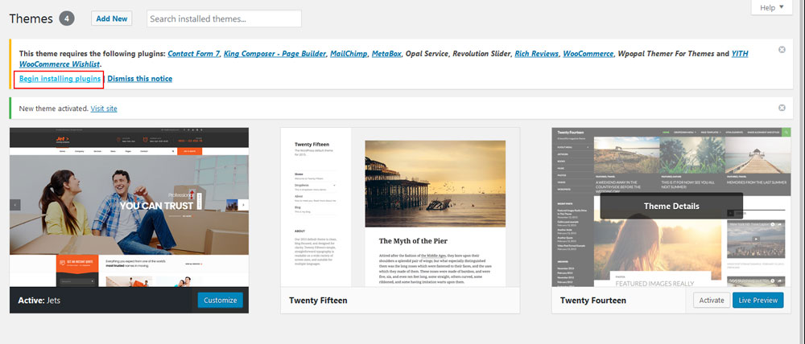
Step 2: Select all plugins then choose Install , Click Apply to install all plugins.
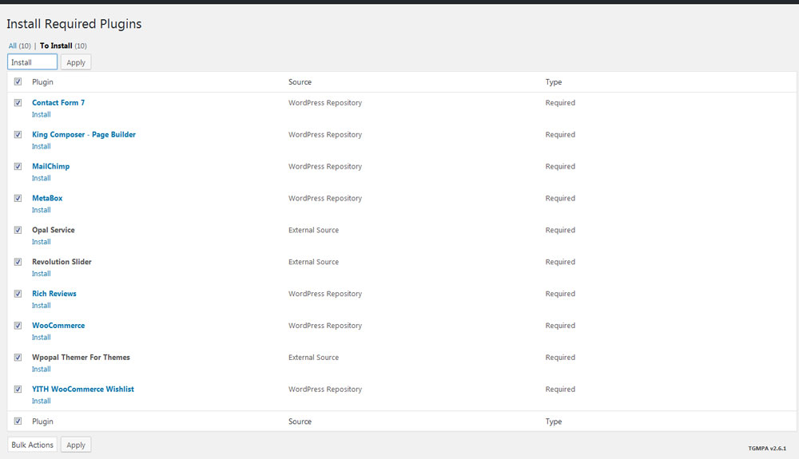
- Plugins Using in Jets theme
- Contact Form 7: Allow you create contact forms on Contact Page.
- MailChimp : to use newsletter function
- Revolution Slider: premium responsive slider.
- King Composer - Page Builder: powerful King composer to create page layout.
- WooCommerce: The Shop engine for your WordPress site.
- WPopal themer for themes: Implement rick functions for themes base on wpo framework and load widgets for theme used.
- Metabox : Create custom meta boxes and custom fields for any post type in WordPress.
- Opal Service : Create and maintain modern online menus for almost any kind of service.
- CMB2 : CMB2 will create metaboxes and forms with custom fields that will blow your mind.
- Opal Requestquote : Create and maintain modern online menus for almost any kind of requestquote.
- Rich Reviews : Rich Reviews empowers you to easily capture user reviews and display them on your WordPress page or post and in Google Search Results as a Google Rich Snippet.
Step 3: After Installing all Plugins, select Activate then click Apply to active all plugins.
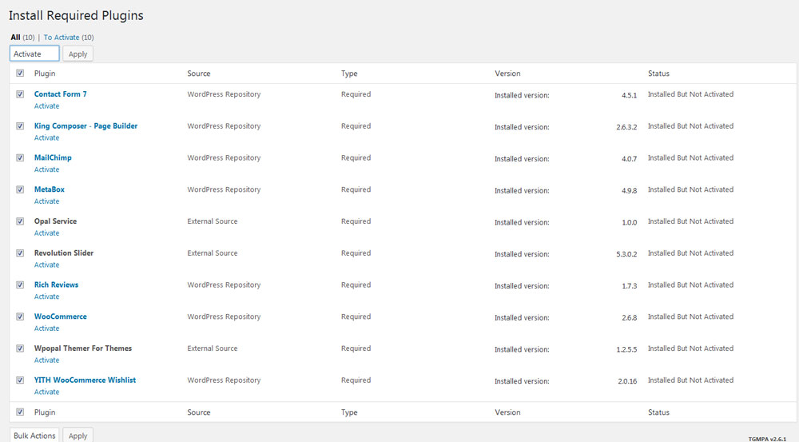
Follow our video guide to know more :
Install Data Demo
Step 1 :Install Data Demo
Opal Team very happy to provide for customer a new function to import data more quickly. It is "One click import".
With "One click import", customer do not import step by step data as import usual. It import all data like : Content, Widget, Revolution slider, Menu, Customize...
One click import data.
Before installing data demo, you need setting up image sizes.
How to set up image size for WooCommerce
These settings affect the actual dimensions of your product images in the shop pages. You can skip this step in case you’re starting a new website and your WordPress installation is fresh, but if you’re switching from another theme and you already have products in your store, you need to make sure the WooCommerce image sizes are the correct ones for your newly installed theme.
a. Navigate to WooCommerce → Settings → Products and find the “Product Image Sizes ” section at the bottom of the page.
Update those values with the following this image for Jets theme.
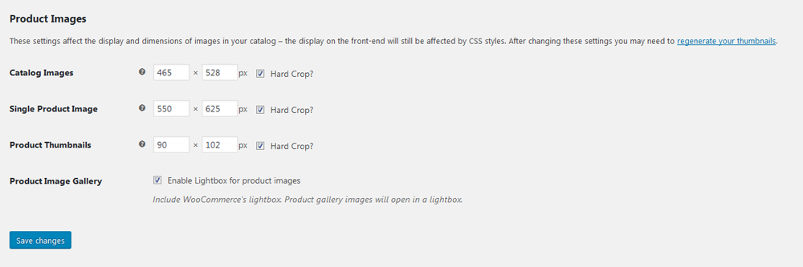
b. If your site has image with another size. To see the changes after you update the image sizes, you need to re-generate the images by using Regen.Thumbnails Plugin.
- Go to Plugins Tab then search and install Regen.Thumbnails plugin.

- Navigating to Tools → Regen.Thumbnails then re-generate your images.
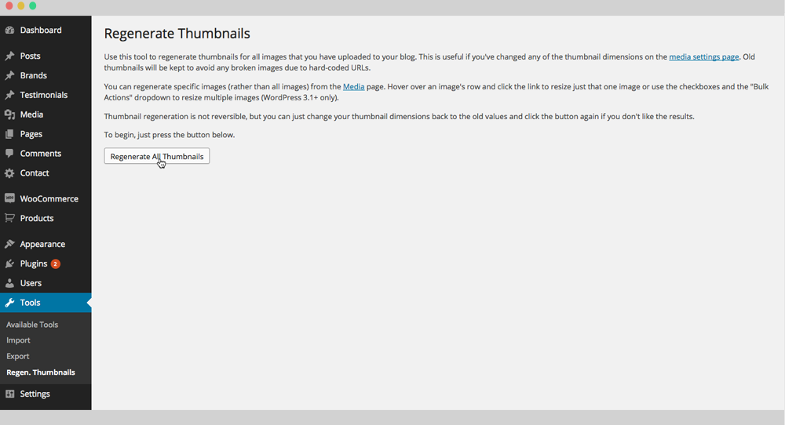
- Then go to Settings → Media then set up size for your images.
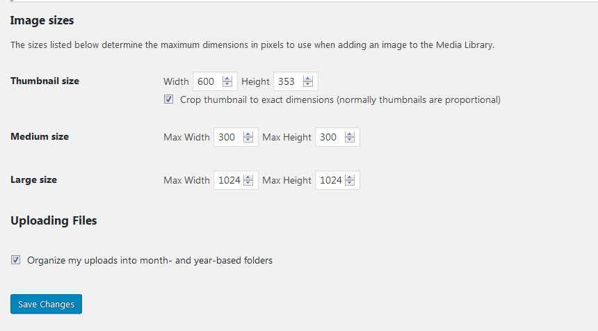
Then go to Settings-> WPopal Themer and enter your settings.
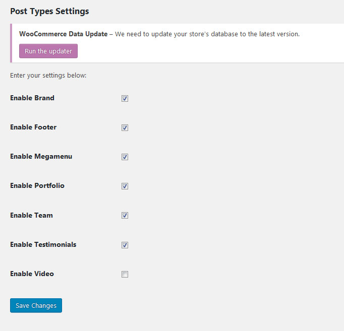
To use it make sure file of your theme have to "import" folder in "inc" folder like this:
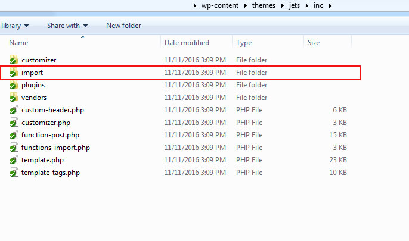
Go to Dashboard -> Appearance -> WpOpal Import . You can see " Get demo from live server", please click in "Jets sample" :
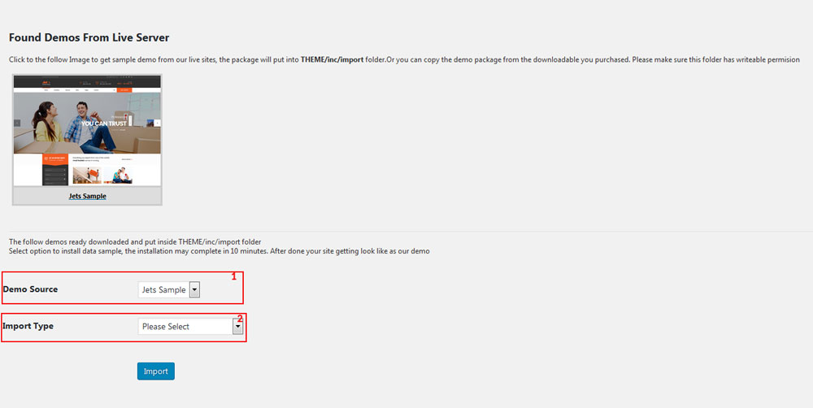
1. Demo Soure : Choose name of demo to import .
2.Import Type : Choose name of type to import ( choose All or chose one of types to import).
- All - suggested option: the option will import all demo content (products, menus, theme options, ect) to replicate Jets demo on your server without any other step.
- Content - import site content: posts, products.
- Widgets - import widgets used in Jets demo site.
- Theme + Page options - import theme and page settings.
- Menu - import all menus.
- Revolutions Slider - import sliders built with with revolutions slider plugin.
- KC Template - import pages built with king composer plugin.
File to import all data is : content.xml.
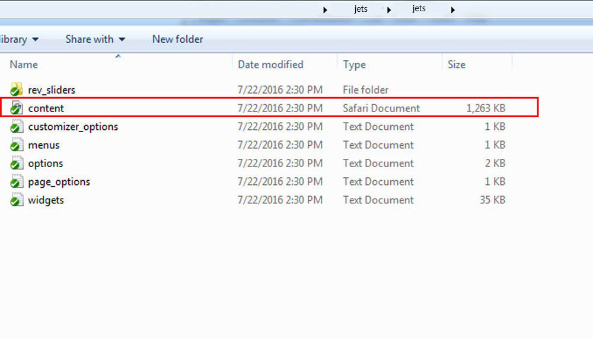
Specially, You can go to Wpopal Import to import config of menu, widget, page and theme options.
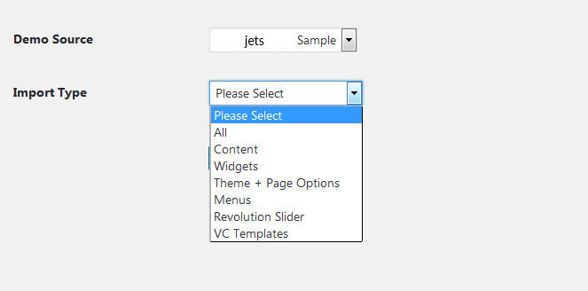
Click "Import" and popup is displayed, click "OK" to continue import data.
When import has been imported it will display popup : "Import is successful".
Follow our video guide to know more :
Or You can import data by tool of WordPress.
Importing The Demo Data - XML File.
The Jets theme comes with importable demo data, such as pages, products, blog, posts, portfolio items, etc, to help you get started in case you’re running on a fresh WordPress installation.
But before import data you should go to "Settings->Permalinks and choose Default in common settings" , you import or export data will not be lost.
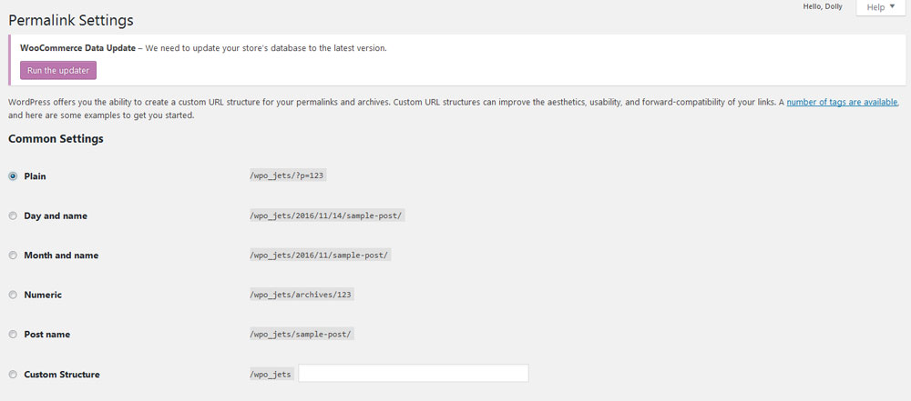
Then go to Settings-> WPopal Themer and enter your settings.
Then go to King Composer-> Composer Settings and Enable King Composer for pages, posts and custom post types. Click "Save Changes" to save your setting.
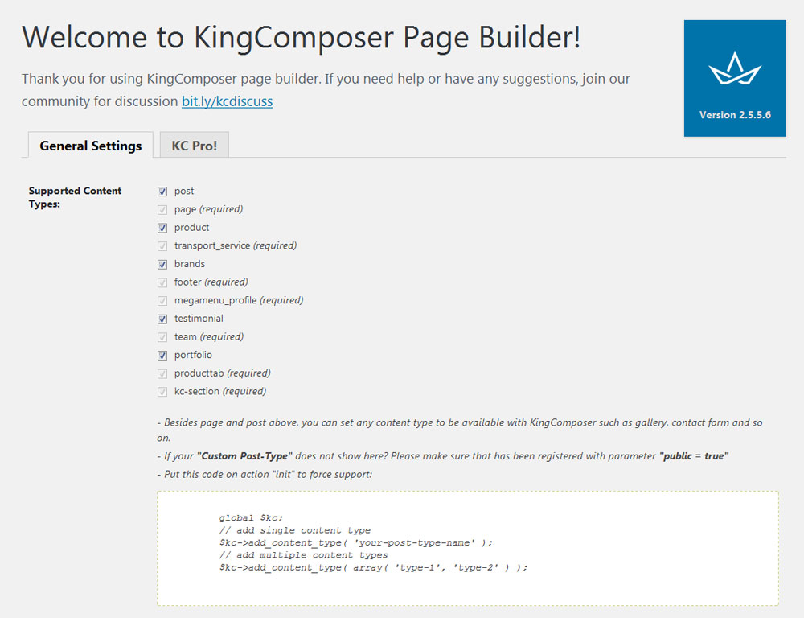
How to set up image size for WooCommerce
These settings affect the actual dimensions of your product images in the shop pages. You can skip this step in case you’re starting a new website and your WordPress installation is fresh, but if you’re switching from another theme and you already have products in your store, you need to make sure the WooCommerce image sizes are the correct ones for your newly installed theme.
a. Navigate to WooCommerce → Settings → Products and find the “Product Image Sizes ” section at the bottom of the page.
Update those values with the following this image for Jets theme.
b. If your site has image with another size. To see the changes after you update the image sizes, you need to re-generate the images by using Regen.Thumbnails Plugin
- Go to Plugins Tab then search and install Regen.Thumbnails plugin.
- Navigating to Tools → Regen.Thumbnails then re-generate your images.
- Then go to Settings → Media then set up size for your images.
And go to step by step bellow:
Step 1: From the WordPress admin area go to Tools >> Import and click on the WordPress link.

Step 2: You can import all of our demo by one step .
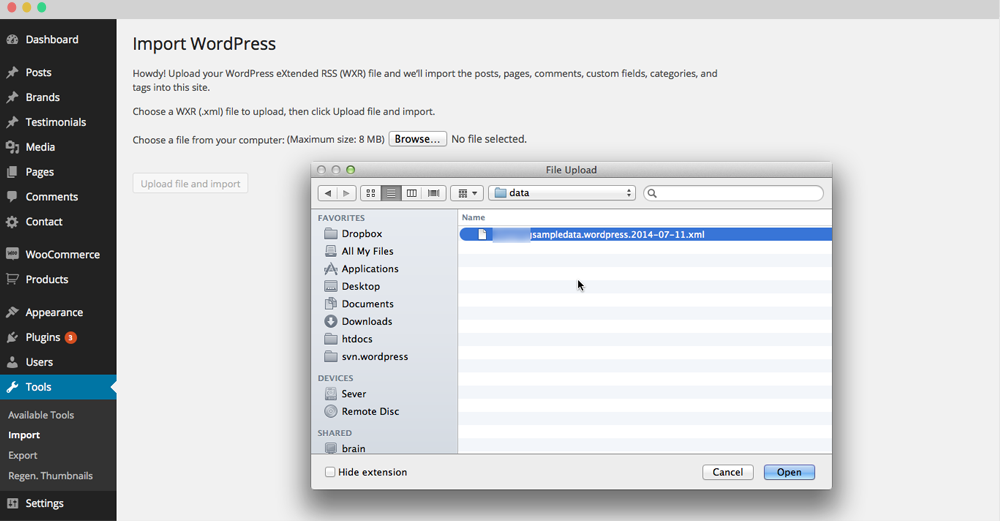
Step 3: Assign Authors
Choose the option to download all data sample file and click Submit. Do not interrupt/cancel the import process!.

The importer should be run only once. If something went wrong and you need to import the content again, you may need to reset your WordPress.
Use this plugin to reset the WordPress database : http://WordPress.org/plugins/WordPress-database-reset/
Step 4 :Set a page as Home Page
After import Dummy Data you need to set default Home page for your site, from your WordPress dashboard, navigate to Settings → Reading.
Select “A static page” and choose “Dummy Homepage” as the Front Page.

Save change then Homepage data sample will be set.
Step 5 - Done! But you still need to set the Menu, Widget, Slider. Follow more on bellow .
Follow our video guide to know more :
2. Import Revolution Slider
1.If you choose import data by tool of WordPress
From the WordPress admin area go to Revolution Slider >> Import Slider and select Slider file on our package.

2.If you choose import data by one click import
From the WordPress admin area go to Revolution Slider . Revolution slider will be displayed after import data by "One click import".
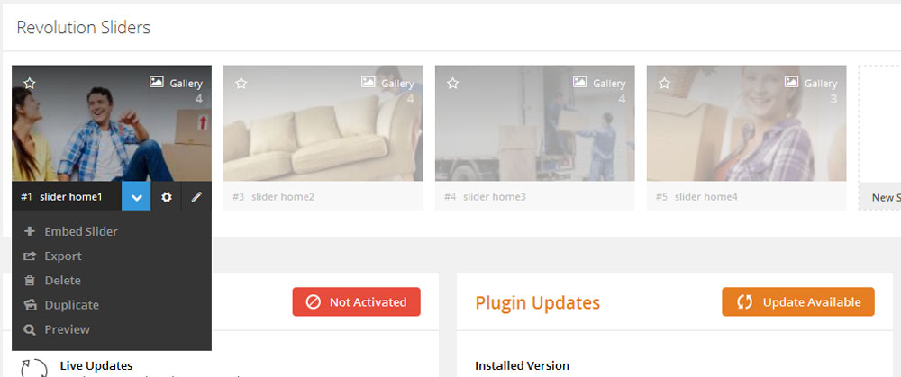
you can see all slider displayed in here and you can
+ Embed slider.
+Export.
+Delete.
+Duplicate.
+Preview.
+Settings.
+Edit slider.
Widgets Installation
Install widget
1.If you choose import data by tool of WordPress
a. Install widget
Go to Admin Panel -> Appearance -> Widgets.
You can see all our widgets, easy to configure by drag and drop Widgets to sidebar.
Then you can use sidebars to position you want. Even you can use sidebar for MegaMenu.
Morever you can search and add more plugins for your purpose by searching on the internet.
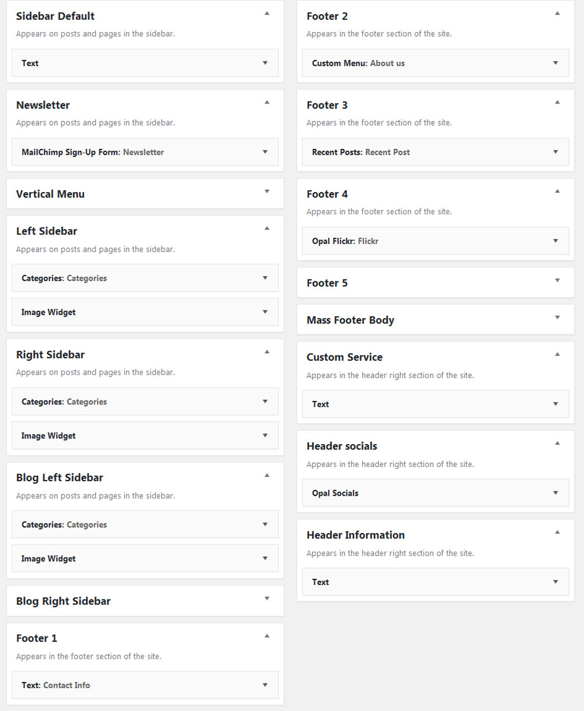
Follow our video guide to know more :
b. Install widget by plugin import widget
Go to Admin Panel -> Plugins -> Add new.
You can see broad add new plugin, please fill in " import widget" to search plugin.
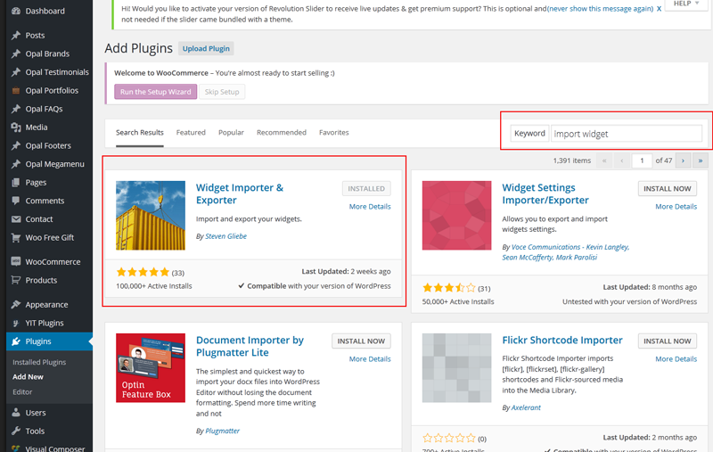
and go to Tool -> widget importer & exporter then you choose widget to import in your site.
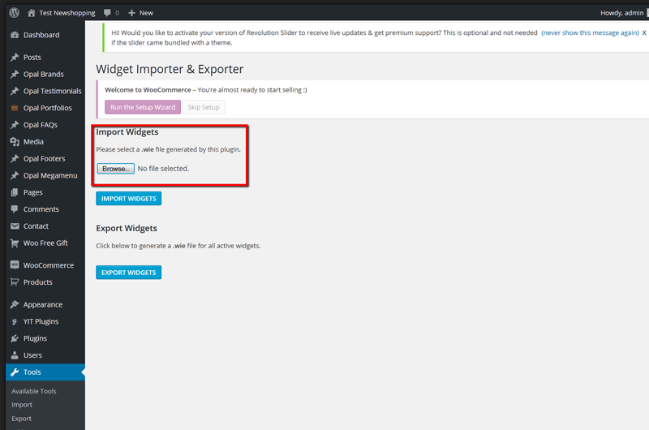
When import finish you can see widget :
2.If you choose import data by one click import
Go to Admin Panel -> Appearance -> Widgets.
You can see all our widgets has been displayed in sidebar.
Theme Configuration
Set Up Logo
You can upload your logo image in the Customize. If the logo is not uploaded, then your site name will be used.
Please, follow the steps below to upload your logo:
Step 1 - Login to your WordPress Dashboard.
Step 2 - Go to Appearance > Customize > Themes and Layouts Setting Tab .
Step 3 - Upload your logo by clicking on Select Image ( our current Jets logo for Header Absolute is 150px x 50px ).
Step 4- Upload your favicon - should be a 32px x 32px Png/Gif image.
With logo in Header Default, Please go to "wp-content/themes/Jets/images" and change image with name: logo.png to change logo for Header Default.
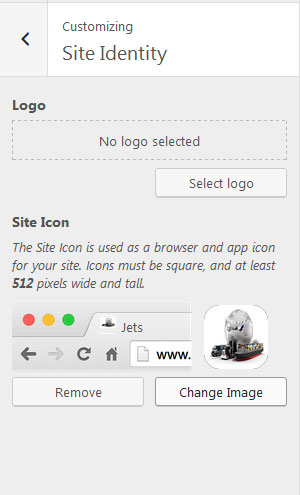
Set Up Menu
1. Creating your menu
Step 1- Login to the WordPress Dashboard.
Step 2- From the 'Appearance' menu on the left-hand side of the Dashboard, select the 'Menus' option to bring up the Menu Editor.
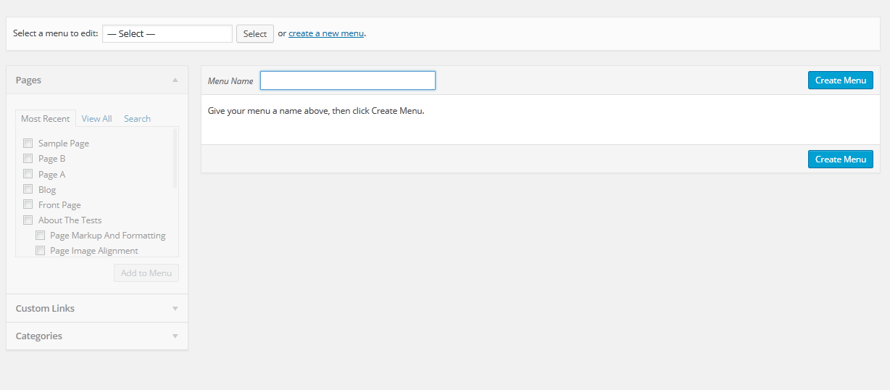
Step 3 - Select Create a new menu at the top of the page.
Step 4 - Enter a name for your new menu in the Menu Name box.
Step 5 - Click the Create Menu button. Your menu is now defined, and you can now add pages to it (steps below).
2. Adding pages to your menu
Step 1 - Locate the pane entitled Pages.
Step 2 - Within this pane, select the View All link to bring up a list of all the currently published Pages on your site.
Step 3 - Select the Pages that you want to add by clicking the check box next to each Page's title.
Step 4 - Click the Add to Menu button located at the bottom of this pane to add your selection(s) to the menu that you created in the previous step.
Step 5 - Click the Save Menu button once you've added all the menu items you want. Your custom menu has now been saved.

The Screen Options allow you to choose which items you can use to add to a menu. Certain items, like Posts or Products are hidden by default. The Screen Options are located in the top right corner of your WordPress Dashdoard.

3. Assigning a Menu to a Location
Once you've created a menu and filled it with items, it's time to assign it to one of the theme pre-defined locations.
- Go to Appearance > Menus and click Manage Locations.
Menu is assigned after import data by "One click import".
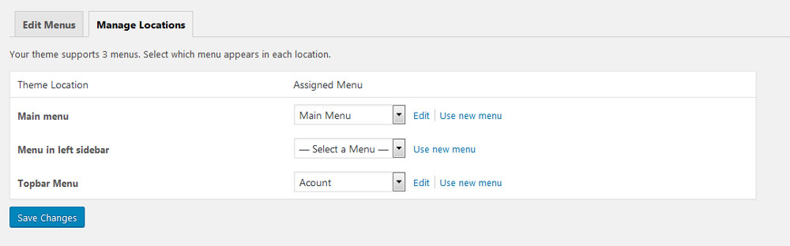
The following steps will guide you in defining your menus using the WordPress menu editor and Opal Megamenu. Opal MegaMenu is a user-friendly, highly customizable responsive Mega Menu WordPress plugin to creat Menu. In each menu, you can add as many items you need: links, pages, posts, custom links, shop categories, direct links to products, internal or external link even sidebars.
4. Using Opal Megamenu tools.
Step 1 - From your Admin Dashboard - Navigate to Opal Megamenu . Then create new Megamenu profiles..
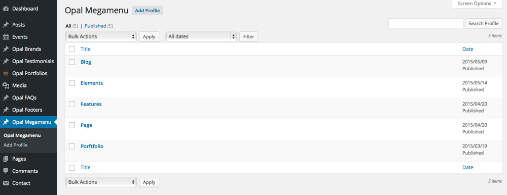
Step 2 - Create Megamenu profiles by King Composer Elements. That can help you create anything you want. Drag any contents you need to your menu.
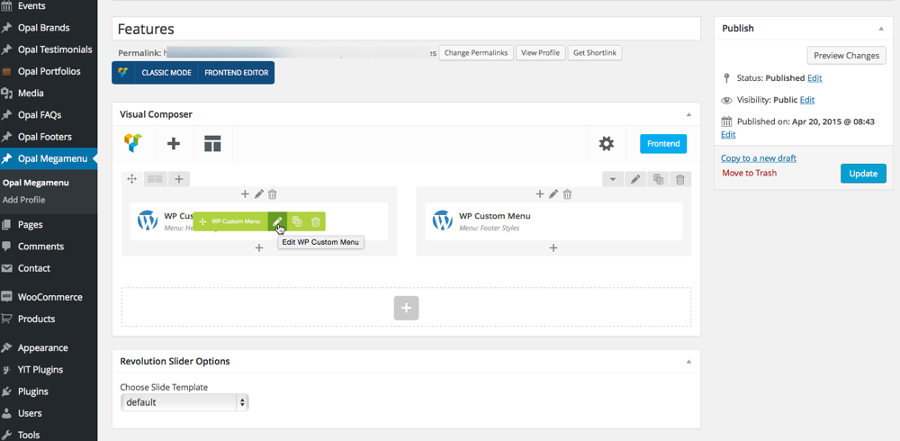
Step 3 - Enable Megamenu profile on Menu.
- Go to your menu. Under each menus option you can see.
1. Megamenu Profile : You can select Megamenu Profile to display on Front End. That profiles was created on step 1. If you select disable, submenu will be displayed.
2. Width : setting width of megamenu content.
3. Alignment : setting position of megamenu content.
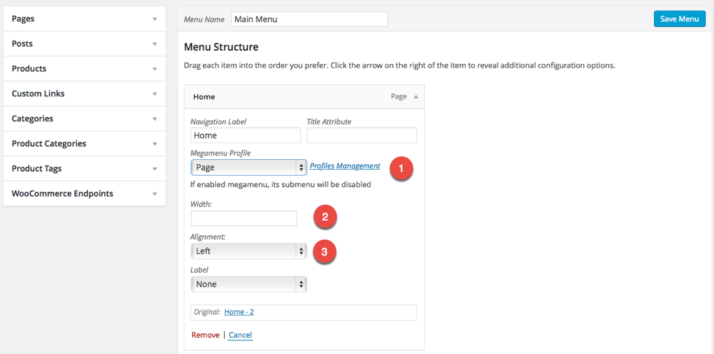
Front end look like
1. Menu Home have megamenu Sub Portfolio profile. Width : 800 , Alignment left.
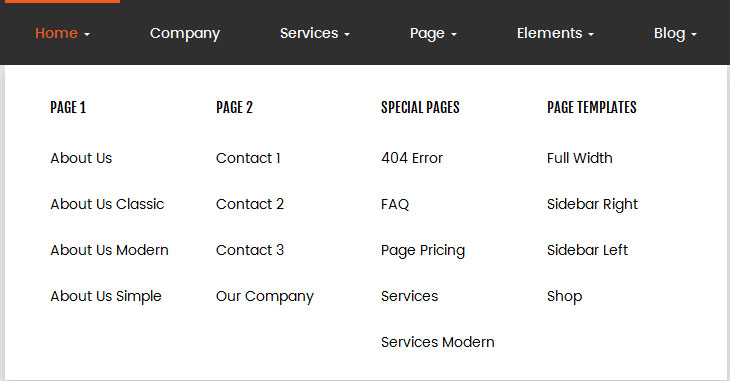
2. Menu Home have disable Megamenu profile. Submenu will be displayed.
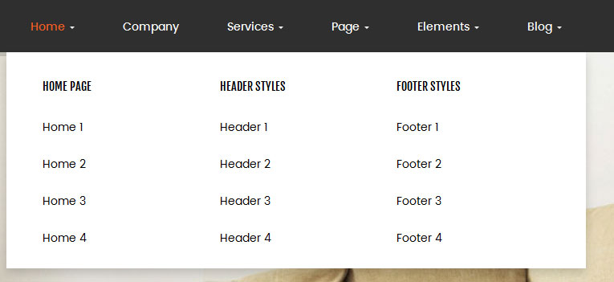
Set Up Home Page
You can quickly build a home page using King Composer for WordPress that is drag and drop frontend and backend page builder plugin that will save you tons of time working on the site content. You will be able to take full control over your WordPress site, build any layout you can imagine – no programming knowledge required.
From your Dashboard admin Navigate to Pages.
- Select All Pages to see all page then click edit one page you want.
- Select Add New to create new page.
A. How to use King Composer
Have you ever used King Composer ? Please follow that guide first : King Composer guide.
Official Plugin Documentation For More information about the King Composer check the official documentation.
Watch video about King Composer.
1. Classic Mode.
You can insert code on table then Home page will be created automatically.
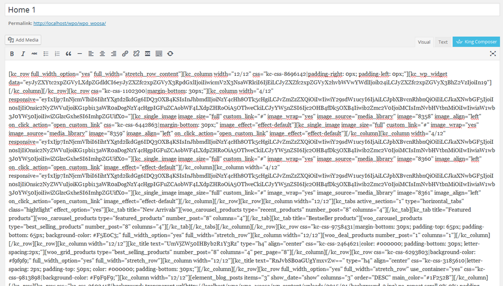
2. Backend Editor Mode
Drag and drop elements you need to build your page layout.
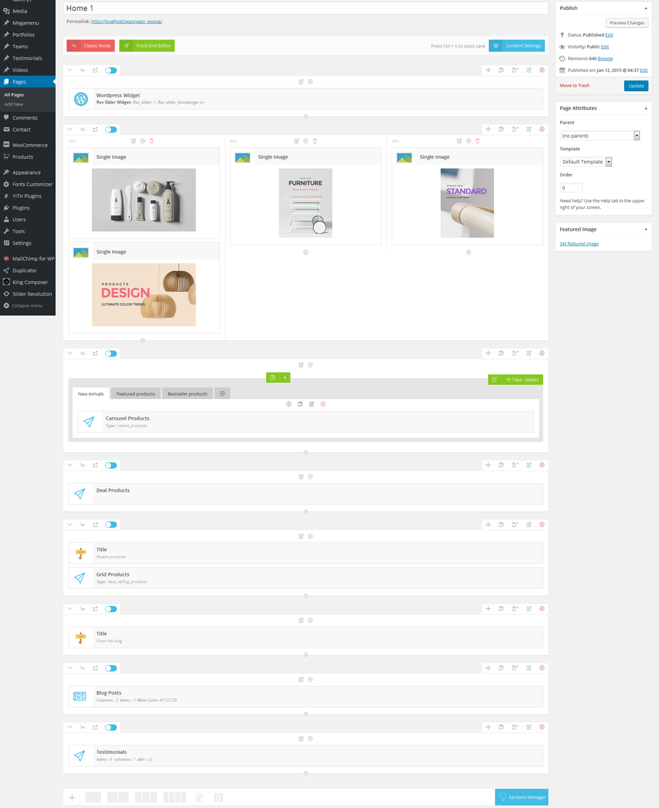
How to use Back End Mode
a. Add and modify Row Layout
Step 1 - Go to your page / post, first activate the backend editor and click Add Element.
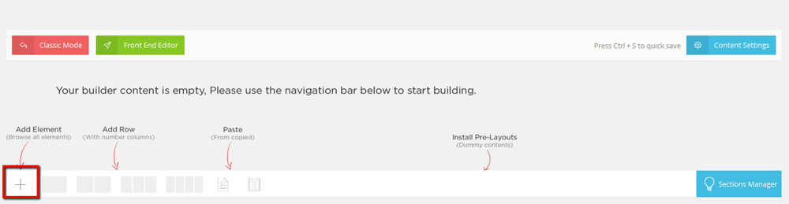
Step 2 - Select the Elements you want to use.
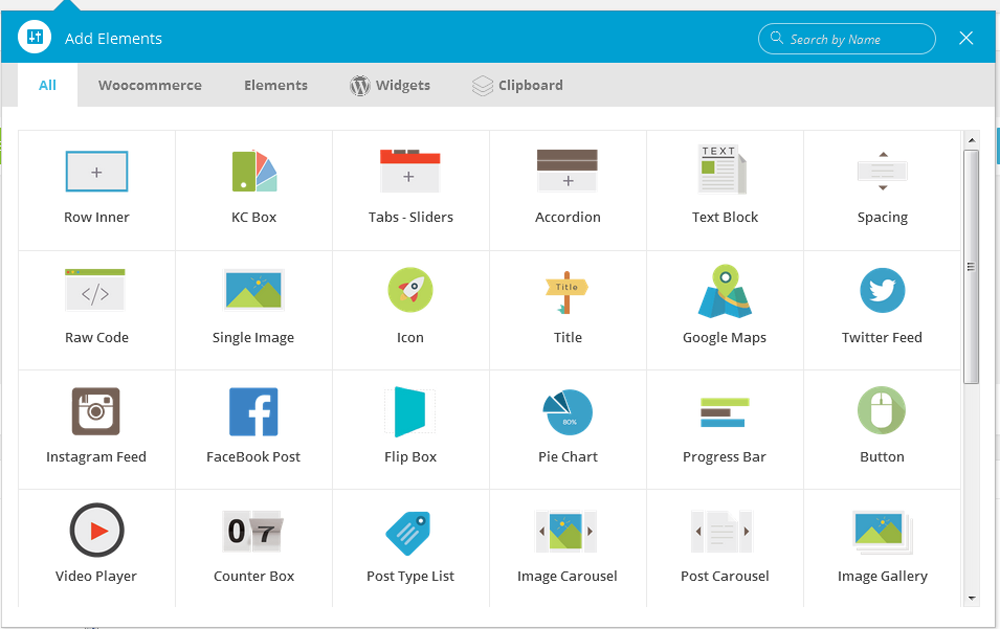
Step 3 - Click on the Edit This Row (pencil icon) to Edit the Row element ( in our example we use row with 3 columns filled with text block ).
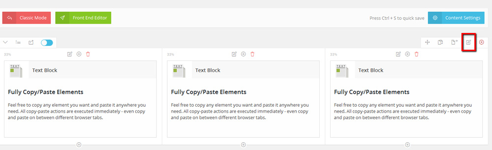
Step 4 - To change the Row layout ( number of columns ) you only select a layout or custom to make your own.
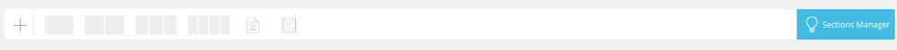
b. Edit Element
Pencil Icon - To Edit Row, Column or Element you need to click the Pencil icon.
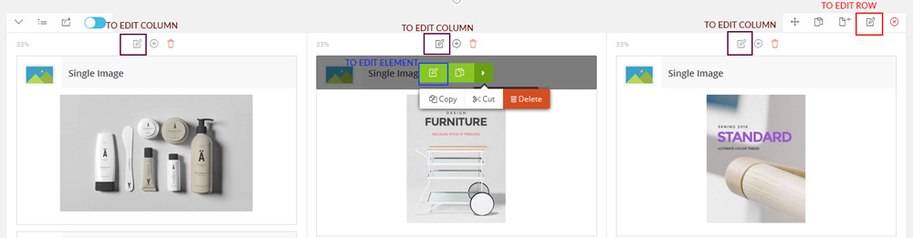
c. Duplicate Element
Pages Icon - To Duplicate Row or Element you need to click the Pages icon.
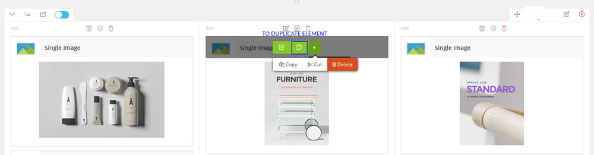
d. Remove Element
Trash Box Icon - To Remove Row, Column or Element you need to click the Trash Box icon.
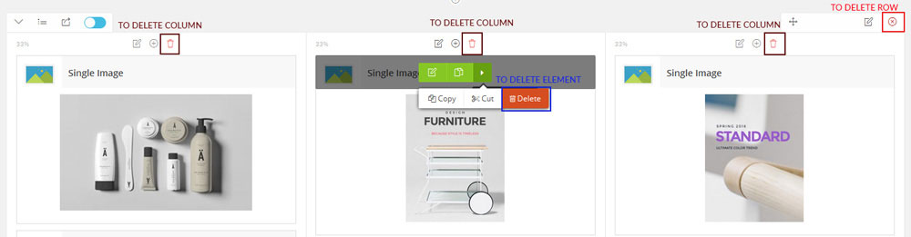
e. Copy Element
Copy Icon - To Copy Row, Element you need to click the Copy icon.
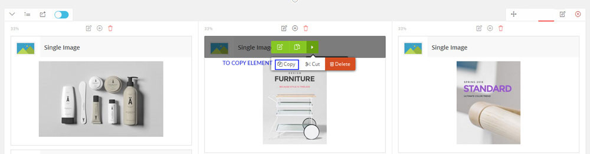
f. Add Element to top of this column
Add Icon - To add element to top of this column you need to click the Add icon.

g. About Row / Column / Custom heading / Text Block Design options.
Design Options - When you edit row / column / custom heading / text block Element, you can edit the design options.
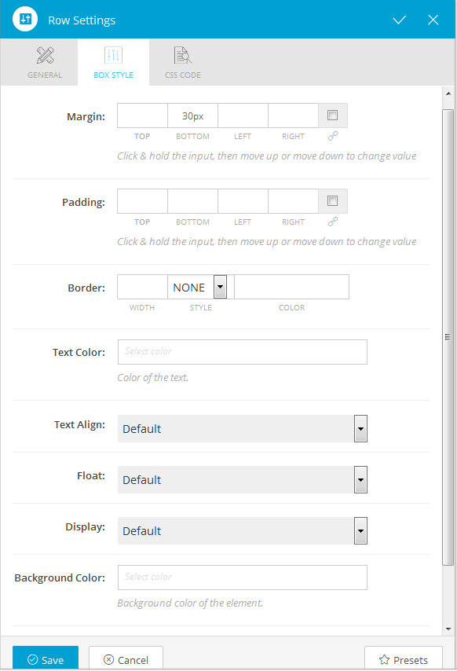
Row / Custom Heading / Text Block element have a default Bottom Margin of 30 pixel, you may want to set it to 0 if you don't want to have bottom space.
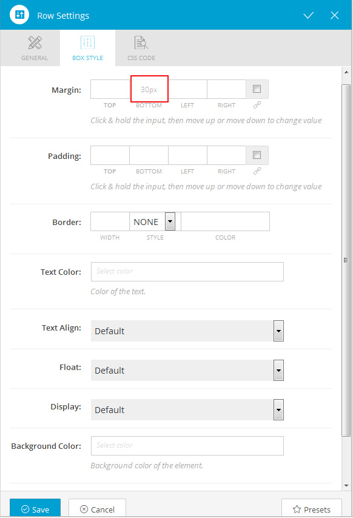
It is Good to add bottom Padding to your Column, so they will looks good on mobile
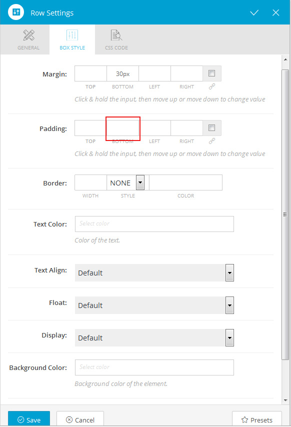
Left and Right Margin should NEVER be modified, please left blank.
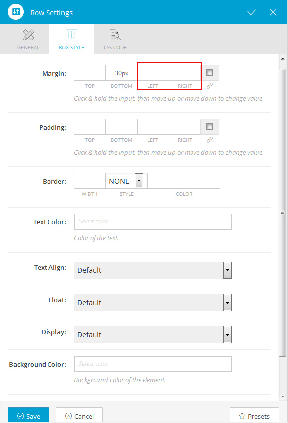
For Row Element the Left and Right Padding should also NEVER be modified, please left blank
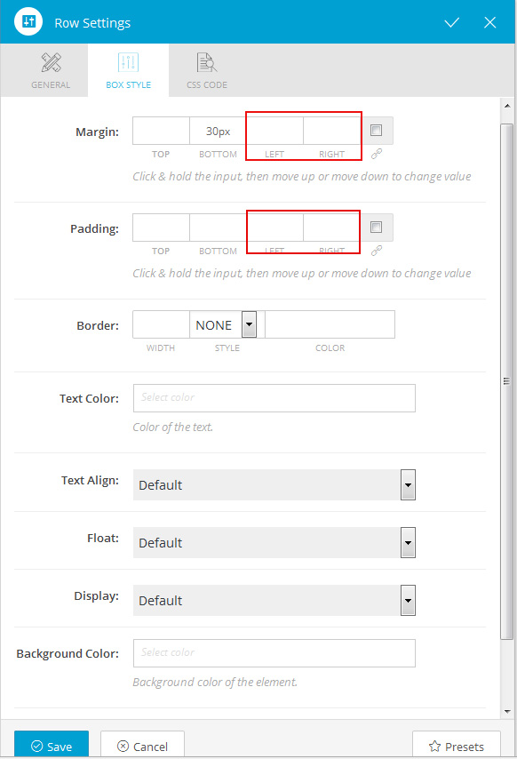
3. Page Options
a. Page Attributes
You can select page attributes on right sidebar of page admin layout. Each Page templates have each styles.
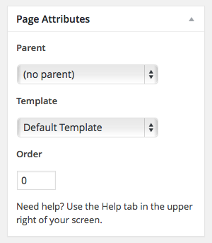
b. Page configure default template
For each page you can change the page layout style, header skin, footer skin and much more! Check the screenshot and read the documentation to see how it works.
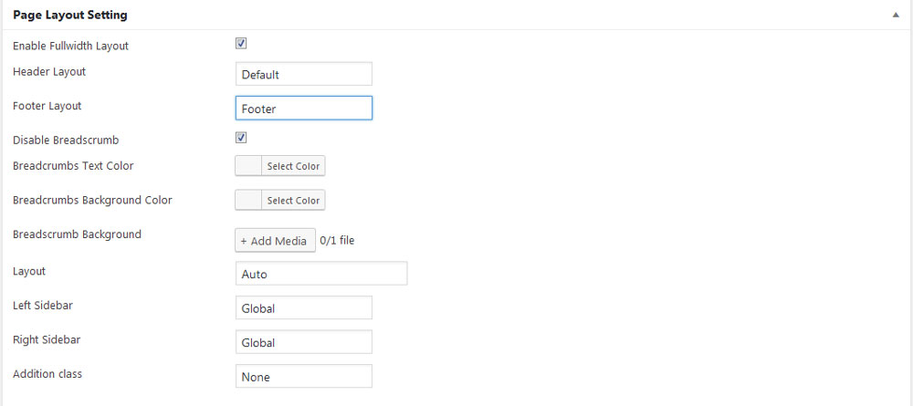
- Enable Fullwidth Layout - Select if you want the page to have a Fullwidth layout.
- Header Layout - Select skin specific for Header on page or use Global.
- Footer Layout - Select skin specific for Footer on page or use Globalsidebar.
- Disable Breadcrumbs - Select if you want to disable the subtitle and breadcrumbs.
- Breadcrumbs Text Color - Select color for text of breadcrumbs.
- Breadcrumbs Background Color - Select color background for breadcrumbs.
- Breadcrumbs Background - Select image to set background.
- Layout Style - Select style for page to have a Auto, Left-Main Sidebar or Main-Right Sidebar or Left-Main-Right Sidebar.
B. Jets Home Page Layout
In Jets theme have 3 headers use to homepage :
Header 1
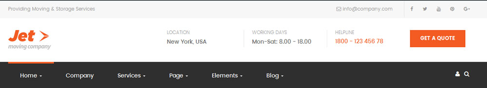
Header 2
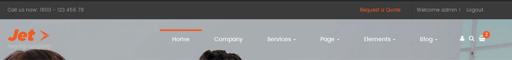
Header 3
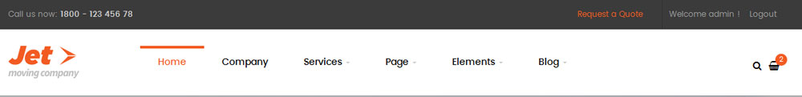
Jets come with more than 3 home page layout. Please check out landing page to know more and build your home page you need.
1. Home default
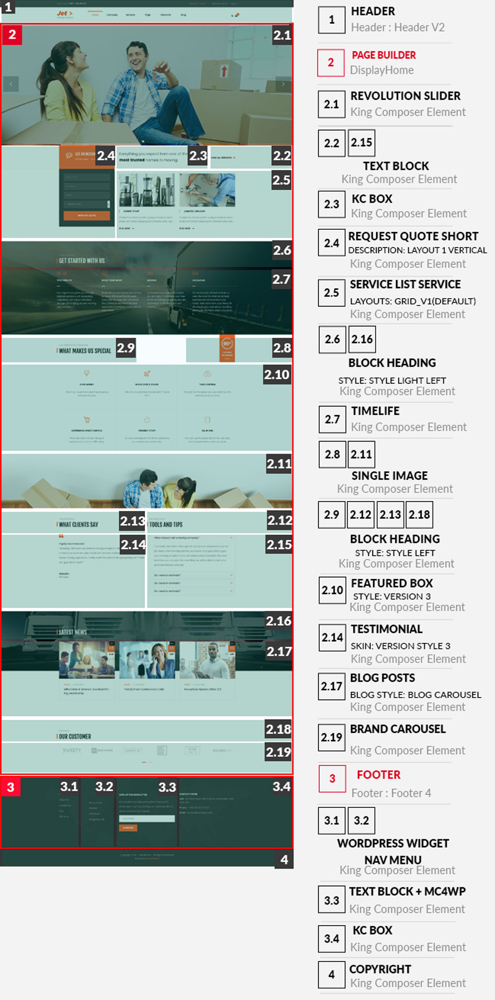
2. Home 2
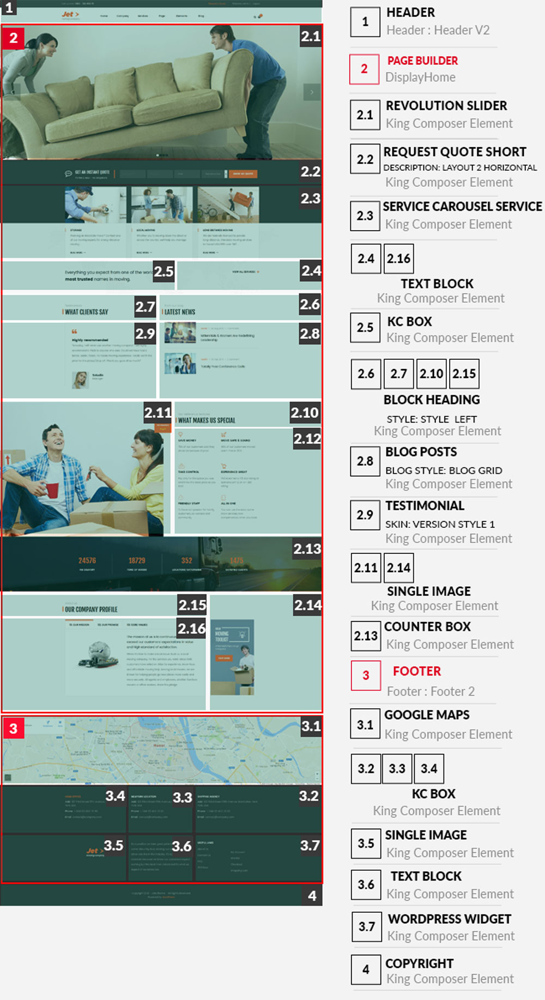
3. Home 3
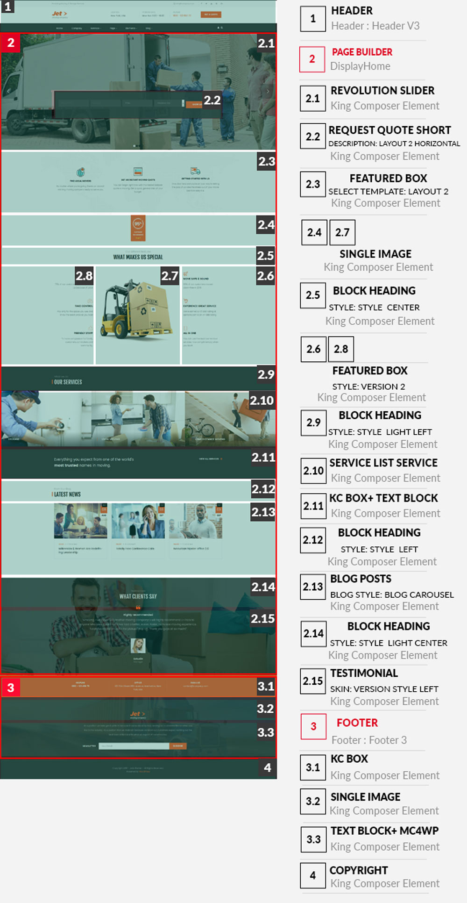
4. Home 4
In Jets have image backgrounds :
If you want to replace image. Please go to edit page and find element that you want to change image then click edit "Row", change image:
C. Set a page as Home Page
Step 1 - Go to Settings > Reading in your WordPress Dashdoard panel.
Step 2 - Set "Front page displays" to a "Static Page".
Step 3 - In the drop down menu for "Front Page" choose a page which will be your home page.
Step 4 - Leave the drop down menu for "Posts page" empty, as this is not used by the theme.
Step 5 - Save changes.
Set Up Blog Page
1. Create the blog post
Step 1 - Log in to your WordPress Administration Panel (Dashboard).
Step 2 - Click the 'Posts' tab.
Step 3 - Click the 'Add New' sub-tab.
Step 4 - Start filling in the blanks: enter your post title in the upper field, and enter your post body content in the main post editing box below it.
Step 5 - As needed, select a category, add tags, post format, fill in the meta setings below the editor.
Step 6 - Upload a featured image for your Post.
Step 7 - Select Post Format. You can create blog post with a lot of Formats like link, gallery, image ..... Select format on Format box from in right sidebar.
Step 8 - Scroll down until you see the Post Configuration box, there you will be able to customize the post.
Step 9 - When your post is ready, click Publish.
2. Manager current all blogs
Navigate to Posts → All Posts.
You can see all informations of you blog post, add new, edit or delete them.

3. Create Blog Page
Option 1. Create Blog Page with King Element
Step 1 - Log in to your WordPress Administration Panel (Dashboard)..
Step 2 - Click on Pages > Add New.
Step 3 - Give your page a name then Change the Editor to Backend Editor ( you need to have the King Composer plugin activated ).
Step 4 - Click on the Add Element button.
Step 5 - Select the WPO New Elements.

Front end look like :
Option 2. Create Blog page with Blog template
Step 1 - Log in to your WordPress Administration Panel (Dashboard)..
Step 2 - Click on Pages > Add New.
Step 3 - From Page Attribubtes -> Select Template : Blog.

Step 4 - Set up Page configuration.
- Enable Fullwidth Layout - Select if you want the page to have a Fullwidth layout.
- Header Layout - Select skin specific for Header on page or use Global.
- Footer Layout - Select skin specific for Footer on page or use Globalsidebar.
- Disable Breadcrumbs - Select if you want to disable the subtitle and breadcrumbs.
- Breadcrumbs Text Color - Select color for text of breadcrumbs.
- Breadcrumbs Background Color - Select color background for breadcrumbs.
- Breadcrumbs Background - Select image to set background.
- Layout Style - Select style for page to have a Auto, Left-Main Sidebar or Main-Right Sidebar or Left-Main-Right Sidebar.
4. Blog Global Configure
Step 1 - From your admin Dashboard navigate to : Apperance > Customize > Blog.
Step 2 - Set up Archive & Category Setting..
You can set Global (default) layout for archive blog page and category blog post then select content sidebar to display.
Step 3 - Set up Single Post Setting.
- Show share post : enable or disable share post function.
- Show related post : enable or disable related post.
- Number of post to show : select number of related post to show.
- Single blog layout : Select layout for single blog.

Set Up Footer
Set Up Opal Footer
Step 1 - From admin Dashboard, navigate to Opal Footer > Add Profile Footer.
Step 2 - Using King Composer backend editor mode then add element to your Footer
Step 3 - Build your footer style with unlimited layout.
Footer layouts for you.
Footer default.
Front end look like :
King Element Layout setting
Footer 1.
Front end look like :

King Element Layout setting
Footer 2.
Front end look like :
King Element Layout setting
Footer 3.
Front end look like :
King Element Layout setting
Step 4 - After create your footer profile. Navigate to : Apperance > Customize > Theme And Layout Setting.
Choose your footer for page.
*********** If you want specific Footer for one of your pages. Please go to your page configuration. Select Footer version you want to display only on that page.
Set Up Opal Service
With Opal Service allow you to create many services to provide for customer.
1. Create Categories
Step 1 - Log in to your WordPress Administration Panel (Dashboard).
Step 2 - Click the 'Opal Service' tab.
Step 3 - Click the 'Categories' sub-tab.
Step 4 - Start filling in the blanks: enter name, slug , parent and description for service.
Click "Add new service category" to finish.
2. Add Service
Step 1 - Log in to your WordPress Administration Panel (Dashboard).
Step 2 - Click the 'Opal Service' tab.
Step 3 - Click the 'Add Service' sub-tab.
Step 4 - Start filling in the blanks: enter your service title in the upper field, and enter your service body content(by use King Composer element) in the main service editing box below it.
Step 5 - As needed, select a category service.
Step 6 - Upload a featured image for your service. Step 7 - Upload a icon for your service.
Step 8 - When your service is ready, click Publish.

Front end look like:
3. Setting
Step 1 - Log in to your WordPress Administration Panel (Dashboard).
Step 2 - Click the 'Opal Service' tab.
Step 3 - Click the 'Settings' sub-tab.
In General tab, you will see slug link setting for page service.
In Page View tab, you will see all config setting for page service.
Set Up RequestQuote
1. Set up Types
Step 1 - Log in to your WordPress Administration Panel (Dashboard).
Step 2 - Click the 'RequestQoute' tab.
Step 3 - Click the 'Types' sub-tab.
Step 4 - Start filling in the blanks: enter your type title in the upper field, and enter your type body content in the main types editing box below it.
Step 6 - Types Management set up type in there with title, content and value.
Step 8 - When your type is ready, click Publish.
2. Setting
Step 1 - Log in to your WordPress Administration Panel (Dashboard).
Step 2 - Click the 'RequestQoute' tab.
Step 3 - Click the 'Settings' sub-tab.
In General tab, you will see Option settings.
In RequestQoute Email tab, enter all options for email.
In RequestQoute Status tab, choose color all options for status.
2. RequestQoute
Step 1 - Log in to your WordPress Administration Panel (Dashboard).
Step 2 - Click the 'RequestQoute' tab.
Step 3 - Click the 'RequestQoute' sub-tab.
Step 4 - You will see all requests in there, you click to edit and change status in there to confirm or pending, closed request.
To Create a request, please go to front-end and you will the form to create.
Please input all information in form and click button Show My Qoute and then waiting for admin to check.
Rich Review
1. Create a form Review
Step 1 - Log in to your WordPress Administration Panel (Dashboard).
Step 2 - Click the 'Page' tab.
Step 3 - Click the 'Add new page' sub-tab.
Step 4 - By use King Composer Element to set up page and use text block element to set up form.
Step 5 - Open Text Block and paste shortcode of form in there . Shortcode: [opal_reviews].
Step 6 - Then go to Homepage and click edit page. Next to find element that use review .
and paste permalink of page that you just created in there
2. Set up Review
Step 1 - You will see image for review in front-end.
Step 2 - Click the image and you will go to page review for customer.
Step 3 - Click the "Write a review".
Step 4 - write your review in form and then click to button Submit.
Waiting for admin approved you review.
Step 5 - Log in to your WordPress Administration Panel (Dashboard).
Step 6 - Click the 'Rich Reviews' tab.
Step 7 - Click the 'Pending Reviews' tab.
Step 8 - Click to review that you want to change status, and change status for this review.
Create Testimonials
Step 1: Go to Opal Testimonial from Dashboard then create content of Testimonials.
Step 2: Drag WPO Testimonial elements by using King Composer on page you want to display testimonials.
You can choose some setting like title, skin ....
Create Paralax
With King Composer you can create Parallax Sections.
Step 1: From your admin dashboard. Go to Page
Step 2 : Click on the Edit This Row (pencil icon) beside row you want to make it become Parallax Sections.
Step 3: In General Tab, select option Parallax.
Step 4: In Design options tab, ADD padding and REMOVE margin for better result, add a Background Image change to Cover and then Saves changes.
Step 5: - Update or Publish your page and you should now have a section with parallax background.
Create Brands
Step 1: Go to Opal Brands from Dashboard then create Brands.
Step 2: Drag WPO Brands elements by using King Composer on page you want to display testimonials.
You can choose some setting like title, number of brands ....

Create Newsletter
We are using MailChimp for WP plugin for Newsletter subscribe. You can read more about MailChimp from here.
Follow that step below to help you can collect email of subscribers.
Step 1 - Signup for Mailchimp account then create your lists to collect email.
Step 2 - Install and active plugin MailChimp for WP.
Step 3 - Navigate to MailChimp for WP > MailChimp then connect with your mailchimp account you created from step 1.
Step 4 - Create mailchimp form to collect email. Navigate to Forms.
Import HTML Code below on section Form mark-up Source.
Source :
<div class="form-style-1"> <div class="input-group"> <input id="mc4wp_email" class="form-control" name="EMAIL" required="required" type="email" placeholder="Your Email" /> <div class="input-group-btn"> <input class="btn-primary btn" type="submit" value="Subcribe" /> </div> </div> </div>
Step 5 - After creating from of your plugin. You must set position where you want to display.
Going Appearance -> Widgets then drag mailchimp widget to Newsletter Sidebar. You can bring that sidebar to every position you want. ( You can drag to left, right sidebar for each page. You can drag to Footer position.... )
Create Contact Page
Create Contact Form.
Make sure you install and active Contact Form 7 plugin to continue reading.
Step 1 - Log in to your WordPress Dashboard, go to Contact > Add New .
Step 2 - Give a Name to your form and change Mail Info.
Step 3 - Edit the Form field to change the Form Layout.
Theme Customization
Jets Theme use Customizer provides an ultra effective and intuitive way to customize theme layout & setting with real-time preview. Bring all of settings to customizer, you do not need to using another theme option anymore
To access Customizer go to your admin Dashboard Navigate to Appearance >> Customize.
1. Fonts Customizer : Add and use google web fonts to any themes.
2. General Setting : Manage general setting like your Site title,breadcrumb background, copyright, ....
3. Theme And Layout Setting: select your header style, footer style for global.
4. Site indentity : Set up logo and favicon.
5. Color : Set up color for site.
6. Social Sharing Setting: select social channel apperance to sharing.
7. Header image : create customize image for breadcrumb and title section.
8. WooCommerce : manage setting of WooCommerce function.
9. Blog & post : manage global setting for Blog.
10. Menu:manage setting of Menu.
11. Opal Services : Manager layout for service page.
How to translate the theme
The easiest way to translate theme to the language of your choice is to use "WPML" plugin.
- To begin, be sure you have the WPML Plugin installed and activated, along with the WPML String Translation plugin.
- To set up WPML the first time, follow their Getting Started Guide.To begin translating, select WPML (in the Dashboard menu) -> String Translation. You should see a list of the strings in the theme (there should be only four), with blue translation links to the right. Click these links to reveal the list of languages you use on your blog and the associated translations.
- How to set and translate main features of the theme
- Using translation management http://wpml.org/documentation/translating-your-contents/using-the-translation-editor/
- Translation Management & Features – http://wpml.org/documentation/translating-your-contents/using-the-translation-editor/translation-management-features/
- Translating URL slugs – http://wpml.org/documentation/getting-started-guide/translating-page-slugs/
- How to scan strings coming from the theme
- http://wpml.org/documentation/getting-started-guide/theme-localization/
- How to translate strings using String Translation
- http://wpml.org/documentation/getting-started-guide/string-translation/
- If adjustment is needed for WPML language switcher please also add this
- http://wpml.org/documentation/getting-started-guide/language-setup/custom-language-switcher/
- If you need more help with WPML plugin. Please go WPML Forum.
FAQs
1. How to update Theme
a. Update Theme via WordPress
Updating the theme via WordPress is very similar to the install process via WordPress. Make sure you had backup all of your customization in our theme.
Follow the steps below to update your theme via WordPress:
Step 1 - Download latest theme package on ThemeForest.
Step 2 - Log into your WordPress Dashboard.
Step 3 - Go to Appearance > Themes.
Step 4 - Deactivate the Jets Theme by simply activating a different theme. Once you activate a different theme, you can delete the Jets theme.
Step 5 - Delete the Jets Theme. Do not worry, your content will not be lost!
Step 6 - Then simply upload the newest “jets_theme.zip” file in the Appearance > Themes section. Click on the Install Themes tab at the top and choose to upload the zip file. You have this step explained in section: Theme Installation via WordPress.
b. Update theme via FTP
Updating the theme via FTP is very similar to the install process via FTP.
Follow the steps below to update your theme via FTP:
Step 1 - Go to .../wp-content > themes location on your server using a FTP client and backup your "Jets" theme folder by saving it to your computer, or you can choose to simply delete it. Your content will not be lost.
Step 2 - Download the new version of Jets theme from your Themeforest and retrieve Jets folder by unpacking the zip that you download from Themeforest and jets_theme.zip.
Step 3 - Then simply drag and drop the new "Jets" theme folder into .../wp-content > themes location. Choose to “Replace” the current one if you did not delete it.
Step 4 - Log into your WordPress Dashboard, go to Appearance > Themes and activate the new Jets theme.
2. How to create Child Theme
What is a Child Theme?
A child theme is a theme that inherits the functionality of another theme, called the parent theme. Child themes allow you to modify, or add to the functionality of that parent theme. A child theme is the best, safest, and easiest way to modify an existing theme, whether you want to make a few tiny changes or extensive changes. Instead of modifying the theme files directly, you can create a child theme and override within.
Why use a Child Theme?
if you modify an existing theme and it is updated, your changes will be lost. With a child theme, you can update the parent theme (which might be important for security or functionality) and still keep your changes. It’s a great way to get started if you are just learning WordPress theme development.
How to create Create child ?
Follow that documentation to create Child Theme Child Themes - Codex
Using that plugin to create Child Theme : One Click Child Theme
3. How to Speed Optimization
If you think your website takes too much time to load maybe you should.
- Install a Cache Plugin for WordPress. We recommend W3 Total Cache.
- Install an Image Compress Plugin. We recommend WP Smush It.
- Install a Database Optimizer Plugin We recommend WP Optimize
- Reduce the number of posts on the page
- Reduce the number of unnecessary plugins.
- Use more icons and less images.
4. How To Enable the Registration Form on the ‘Login/My Account’ page?
In case you cannot see the Registration Form on the My Account page or checkout page, it means you need to enable it.
You can find this setting by navigating to WooCommerce >> Settings.
Open Account Tab In the Registration section, make sure the" Enable registration on the "Checkout" page" and “Enable registration on the “My Account” page” options is checked.
This is what you should be seeing on your screen:
5. How To Add Color/Size selection box on the product page?
In WooCommerce, you can define product attributes, such as size or color, to use be used as product options.
Start by navigating to Products → Attributes.
For example an attribute could be “Size“. Then you need to Configure its terms. Those would be “Small, Medium, Large“.
Once defined, these global attributes can be assigned to your variable products.
Get Support
If you are unable to find your answer here in our documentation, please take a photo screenshot with description detail about your problem or idea. Send all to email : help@wpopal.com or ticket: info@wpopal.com. Our technical team will check and try their best to help.
Our support scope
Our support covers configuration, building site as demo, trouble using any features, and bug fixes. We don't provide support for customizations or 3rd party extension.
Our support time
We try our best to monitor the email around the clock, however, this is not always possible due to different time zones. We will try to reply you as fast as we can.
Our working time is 8.00 AM - 5.30 PM, Monday to Friday (GMT+7). So if ask for help in the weekend, you may have to wait a little bit for support and please be patient.